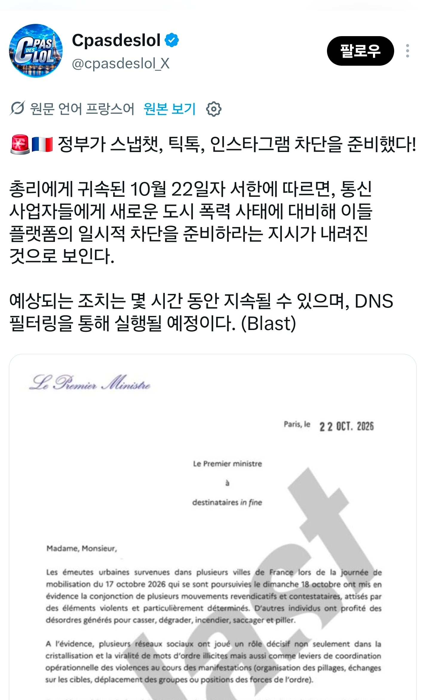
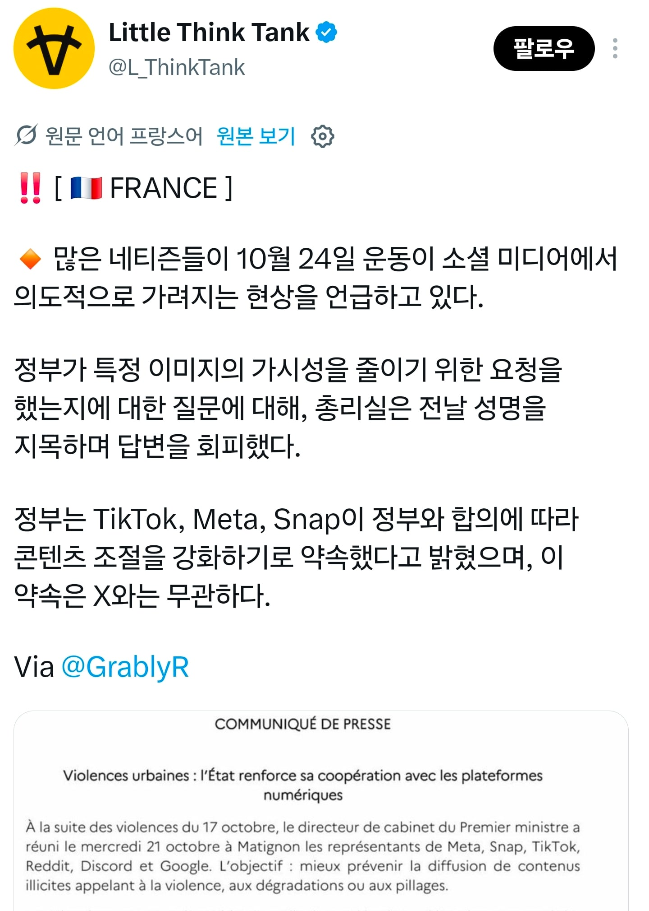

24일 시위 앞두고 차단하거나 알고리즘 조정 명령 떨어진듯
지금도 한창 진행중인거 같고


24일 시위 앞두고 차단하거나 알고리즘 조정 명령 떨어진듯
지금도 한창 진행중인거 같고
Be like poland
마지막은 무섭네
근데 저렇게 sns차단하는게 법적으로 옳은거임?
원전 원천기술우리한테 팔아라 프랑스만없으면 거의독점가능할텐데
매맞아야 움직이는게 인도인같네요
프랑스 생걱보다 엄청 개판되었구나